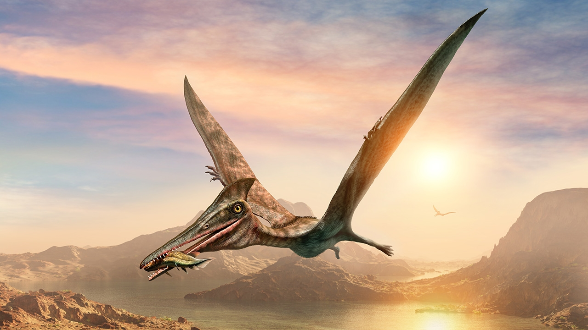
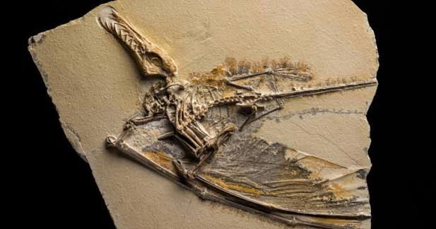
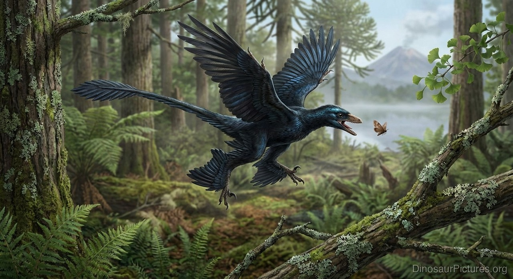
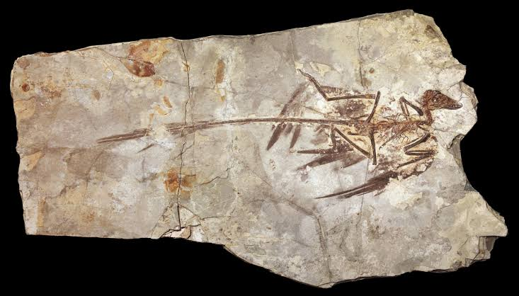
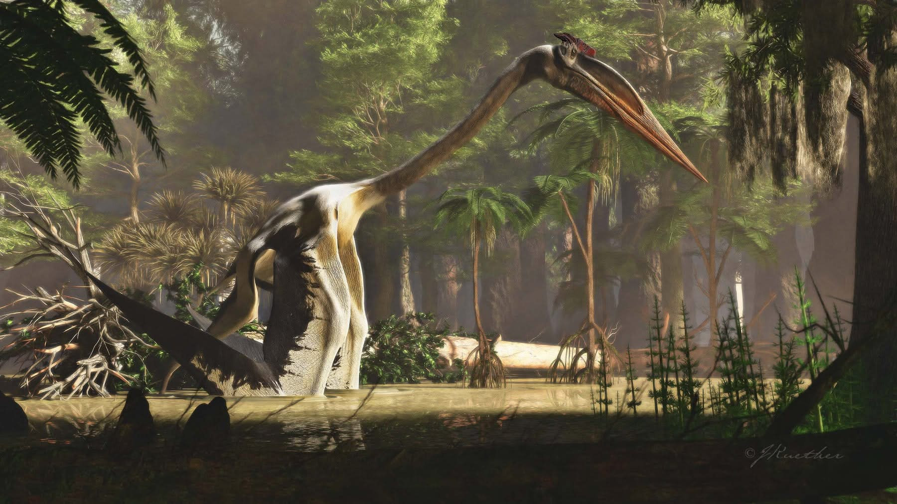
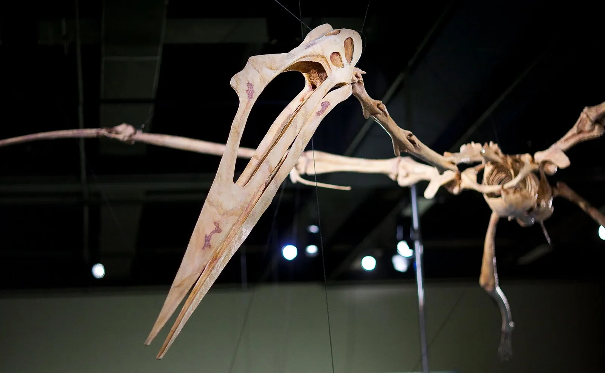
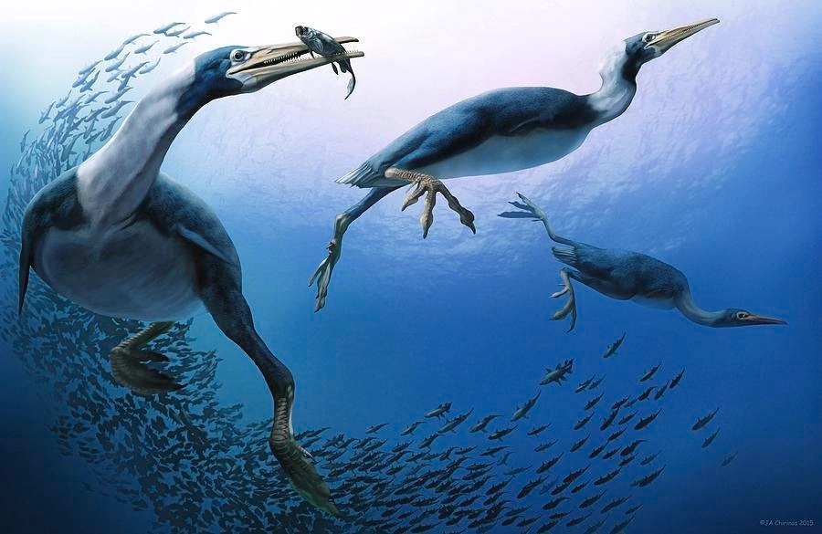
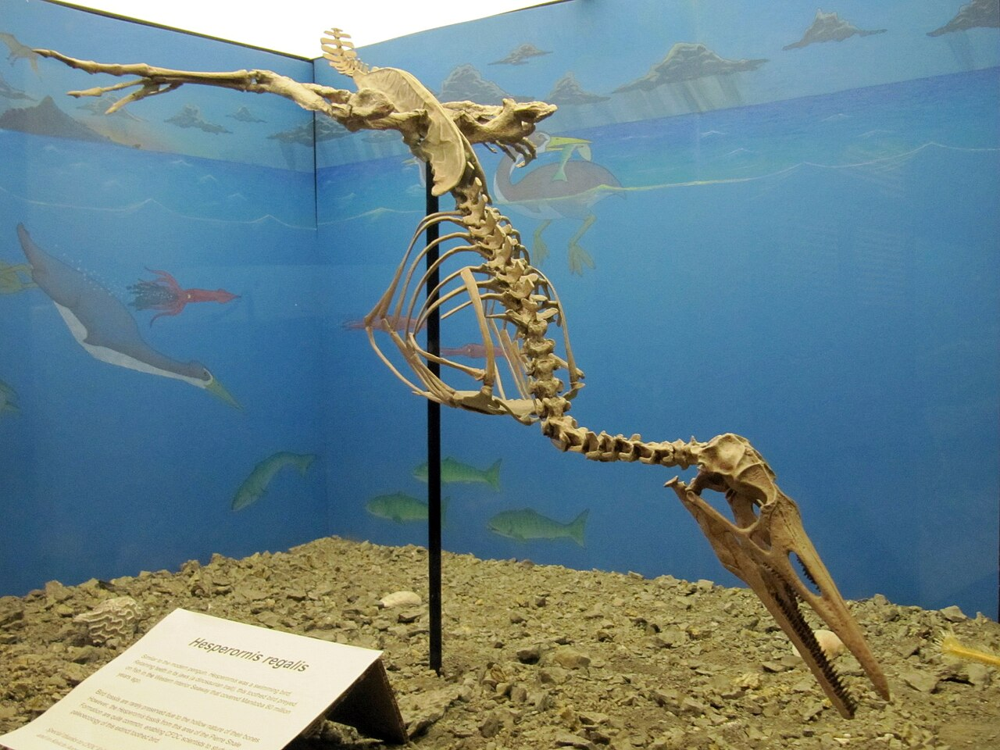
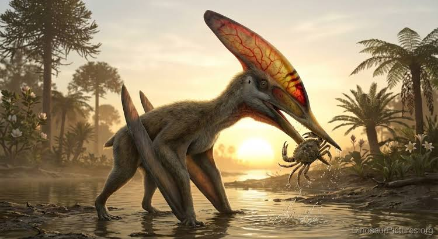
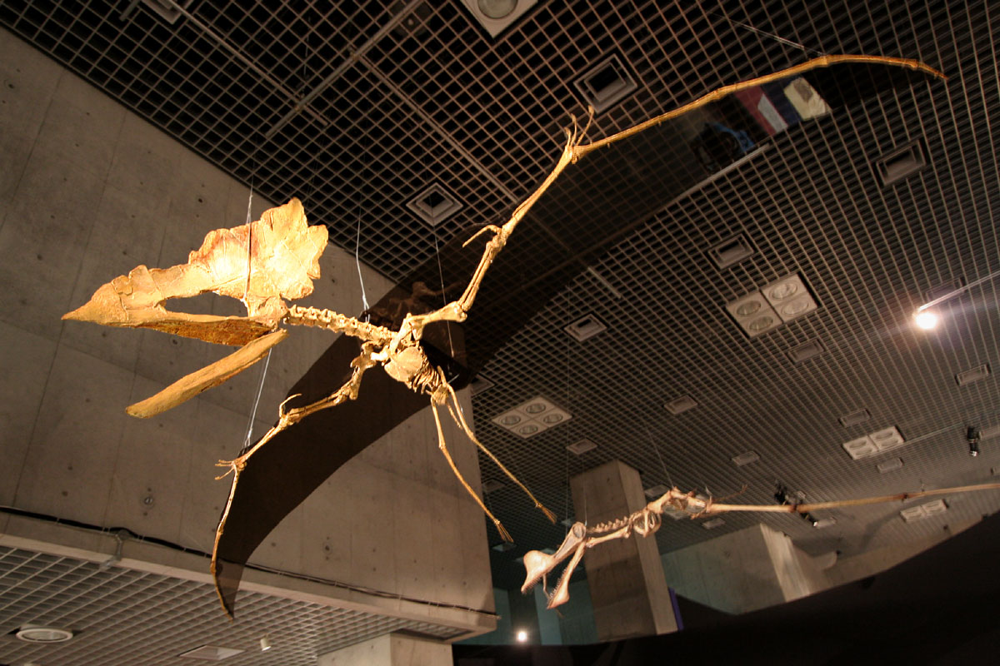

1.Pterosaur
เทอโรซอร์ เป็นสัตว์เลื้อยคลานกลุ่มหนึ่ง ที่ชีวิตและอาศัยอยู่ในยุคก่อนประวัติศาสตร์ ปัจจุบันนี้ได้สูญพันธุ์ไปหมดแล้ว เทอโรซอร์ จัดอยู่ในอันดับ Pterosauria โดยมักจะถูกเรียกว่า "ไดโนเสาร์บินได้" ในระยะหลังที่มีขนาดใหญ่ และไม่มีฟัน มีชีวิตอยู่ในช่วงมหายุคมีโซโซอิก สืบทอดเผ่าพันธุ์และครองโลกมาอย่างยาวนานถึง 162 ล้านปี ก่อนจะสูญพันธุ์ไปทั้งหมดในช่วงยุคครีเตเชียสตอนปลาย เทอโรซอร์ ได้วิวัฒนาการมาเป็นลำดับขั้นตามยุคสมัยไปเรื่อย ๆ เช่น ยุคจูแรสซิก จนกระทั่งถึงยุคครีเตเชียส เทอโรซอร์ที่มีขนาดใหญ่ที่สุด คือ เคตซัลโคแอตลัส นอร์โทรพี มีความสูงเท่า ๆ กับยีราฟ มีความกว้างของปีก 10.5 เมตร น้ำหนักตัวถึง 200 กิโลกรัม เฉพาะส่วนหัวรวมถึงจะงอยปากด้วยก็ยาวถึง 3 เมตร จัดเป็นสิ่งมีชีวิตที่บินได้ขนาดใหญ่ที่สุดเท่าที่โลกเคยมีมา และเชื่อว่าชอบที่จะกินลูกโดโนเสาร์เป็นอาหาร

>
2.Microraptor
ไมโครแรปเตอร์ เป็นไดโนเสาร์กินเนื้อขนาดเล็กสกุลหนึ่ง ในวงศ์โดรมีโอซอร์ (Dromaeosauridae) มีรูปร่างคล้ายไดโนเสาร์ผสมนกมีขนปกคลุมลำตัวเหมือนนก ขนาดลำตัวเท่า ๆ กับนกพิราบ มีปีกทั้งหมด 4 ปีก (ขาหน้า 2 ปีก และขาหลัง 2 ปีก) มีขนหางที่เรียวยาว และเชื่อว่าดำรงชีวิตและหากินบนต้นไม้เป็นหลัก รวมถึงทำรังบนต้นไม้ ไมโครแรปเตอร์ ไม่สามารถบินได้ แต่จะใช้ปีกและขนร่อนไปมาเหมือนสัตว์ในยุคปัจจุบันหลายชนิดเช่น กระรอกบิน เป็นไดโนเสาร์ที่ถือเป็นต้นแบบบรรพบุรุษของนกจำพวกแรก ที่ใช้ขนในการเป็นเครื่องดึงดูดทางเพศและเป็นเสมือนเครื่องประดับ เนื่องจากมีขนที่มีสีสันเลื่อมเป็นพรรณราย สีสันของขนเช่นนี้เกิดจากเซลล์ผลิตเม็ดสี ที่เรียกว่า เมลาโนโซมส์


3.Quetzalcoatlus
เคทซัลโคอาตลัส คือเทอโรซอร์หรือสัตว์เลื้อยคลานบินได้ขนาดใหญ่ที่สุดชนิดหนึ่ง มีชีวิตอยู่บนโลกในช่วงปลายยุคครีเตเชียสเมื่อประมาณ 68-66 ล้านปีก่อน ในช่วงยุคมาสทริชเชียนเทเชียสตอนปลายในทวีปอเมริกาเหนือ มีชื่อเสียงในฐานะสัตว์บินได้ที่ใหญ่ที่สุดเท่าที่เคยค้นพบ เควทซาลโคแอตลัสเป็นสัตว์บินได้ที่ใหญ่ที่สุดที่เคยมีมาในโลก ประเมินว่าเมื่อยืนบนพื้นมันสูงได้ถึง 3.66 เมตร ปีกแต่ละช้างเมื่อกางออกมีความยาว 6 เมตร มีกระดูกแขนแข็งแรงและมีสันกระดูกที่ให้กล้ามเนื้อยึดเกาะ ประกอบกับกระดูกอกขนาดใหญ่ การตีความทางประวัติศาสตร์เกี่ยวกับอาหารของเควตซัลโคอาตลัสมีหลากหลาย ตั้งแต่การกินซากสัตว์ไปจนถึงการกินแบบร่อนหาอาหารเหมือนนกปากช้อน ในปัจจุบัน งานวิจัยล่าสุดพบว่ามันน่าจะล่าเหยื่อขนาดเล็กบนพื้นดิน ในลักษณะเดียวกับนกกระสาและนกเงือกดินนี่จึงถูกเรียกว่าสมมติฐานการล่าเหยื่อบนพื้นดิน เควตซัลโคอาตลัสเป็นสัตว์ที่อาศัยอยู่บนพื้นดินเป็นอย่างมากเมื่อเทียบกับสัตว์ปีกดึกดำบรรพ์ชนิดอื่นๆ


4.Hesperornis
เฮสเปอร์รอร์นิส เป็นนกที่สูญพันธุ์ไปแล้ว อาศัยอยู่ในช่วงยุคครีเทเชียส เฮสเปอร์รอร์นิสถูกศึกษาครั้งแรกโดย Marsh เฮสเปอร์รอร์นิสเริ่มโด่งดังมาจากอเมริกาเหนือ - แคนซัส เป็นนกที่ว่ายน้ำอย่างคล่องแคล่วอย่างเห็นได้ชัด และน่าจะไล่ล่าจับปลา เชื่อกันว่าเป็นนักดำน้ำ ที่ดี ปีกมีขนาดเล็กและใช้บินไม่ได้ กระดูกปีกมีลักษณะคล้ายไม้ค้ำ กระดูกอกไม่มีสันที่เด่นชัดซึ่งทำหน้าที่เป็นจุดยึดสำหรับกล้ามเนื้อที่ใช้ในการบิน อย่างไรก็ตาม ขาได้รับการพัฒนาอย่างแข็งแรงและปรับตัวได้อย่างชัดเจนสำหรับการดำน้ำและว่ายน้ำอย่างรวดเร็ว คอเรียวและหัวยาวและเรียว ทั้งสองส่วนน่าจะสามารถเคลื่อนไหวไปมาด้านข้างได้อย่างรวดเร็ว


5.Thalassodromeus
Thalassodromeus หรือ ทาลาสโซโดรมีอุส เป็นสัตว์เลื้อยคลานบินได้ในกลุ่ม เทอโรซอร์ (Pterosauria) ไม่ใช่ไดโนเสาร์โดยตรง อาศัยอยู่บริเวณที่ปัจจุบันคือประเทศบราซิลในช่วง ยุคครีเทเชียสตอนต้น ประมาณ 100 ล้านปีก่อน มีปีกขนาดใหญ่และทรงพลังสำหรับใช้บิน และมีเสียงร้องที่ดังและเป็นเอกลักษณ์สำหรับการสื่อสารและส่งสัญญาณไปยังตัวอื่นๆ อาศัยอยู่ในบริเวณที่เป็นประเทศบราซิลในปัจจุบัน ในช่วงต้นยุคครีเทเชียส เมื่อประมาณ 100 ล้านปีก่อน มันมีกะโหลกที่ใหญ่ที่สุดเท่าที่รู้จักในบรรดาเทโรซอร์ โดยมีความยาวประมาณ 1.42 เมตร (4 ฟุต 8 นิ้ว) และมีสันกะโหลกที่ใหญ่ที่สุดเมื่อเทียบกับสัดส่วนของสัตว์มีกระดูกสันหลังชนิดอื่นๆ แม้ว่าจะพบเพียงกะโหลกเท่านั้น สันกะโหลกมีโครงสร้างเบาบางและทอดยาวจากปลายขากรรไกรบนไปด้านหลังของกะโหลก โดยสิ้นสุดที่รอยบากรูปตัววีที่เป็นเอกลักษณ์ ขากรรไกรไม่มีฟันและมีขอบบนและล่างที่คม กะโหลกของมันมีช่องเปิดขนาดใหญ่